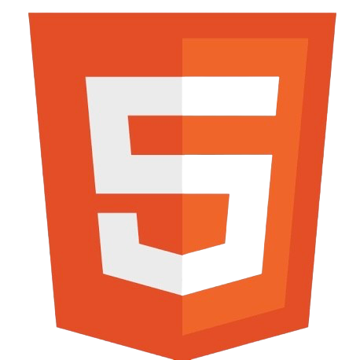
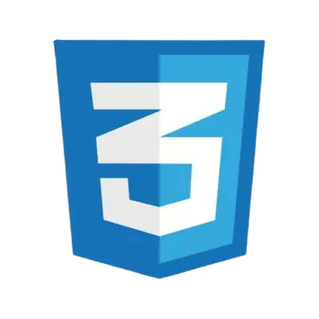
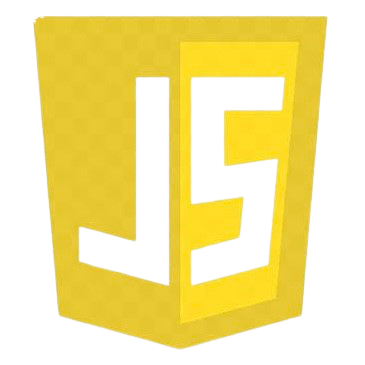
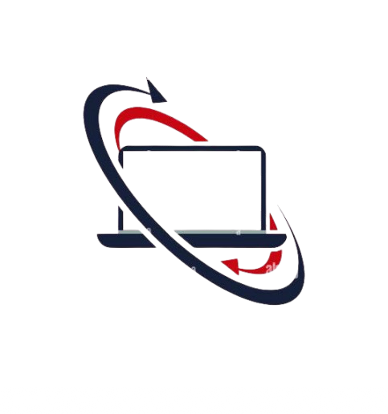

TENTANG SAYA
Saya adalah siswa jurusan Teknik Komputer dan Jaringan (TKJ) yang mempelajari cara merakit komputer, mengelola jaringan, mengenal bahasa pemprograman dan memahami teknologi informasi. Jurusan ini membantu saya memahami dunia teknologi dan mempersiapkan diri untuk masa depan di bidang IT.
KEAHLIAN
- INSTALASI COMPUTER
-  HTML
-  CSS
-  JAVASCRIPT
- NETWORK
-  DESIGN
PENGALAMAN
MERAKIT DAN MENGINSTAL KOMPUTER
2024-2025Menguasai proses perakitan PC dan instalasi sistem operasi.
Mengatur jaringan LAN
2024-2025membuat dan mengatur jaringan lokal (Local Area Network)
Mengatasi troubleshooting jaringan atau komputer
2024Menangani masalah koneksi internet, perangkat keras, atau sistem operasi.
Membuat program sederhana menggunakan bahasa html,css dan javascript.
2024-sekarangmembuat website statis dan memahami logika dasar pemrograman
PENDIDIKAN
SMK HASYIM ASY'ARI BOJONG TEGAL
XI TJKT 1Fokus dalam materi pemrograman, pengembangan web, dan teknologi sistem komputer.
PENJELASAN KEAHLIAN
"Saya Memiliki keahlian dalam instalasi komputer, pemrograman web (HTML, CSS, JS), perancangan jaringan komputer, serta desain dan pengembangan tampilan web.”